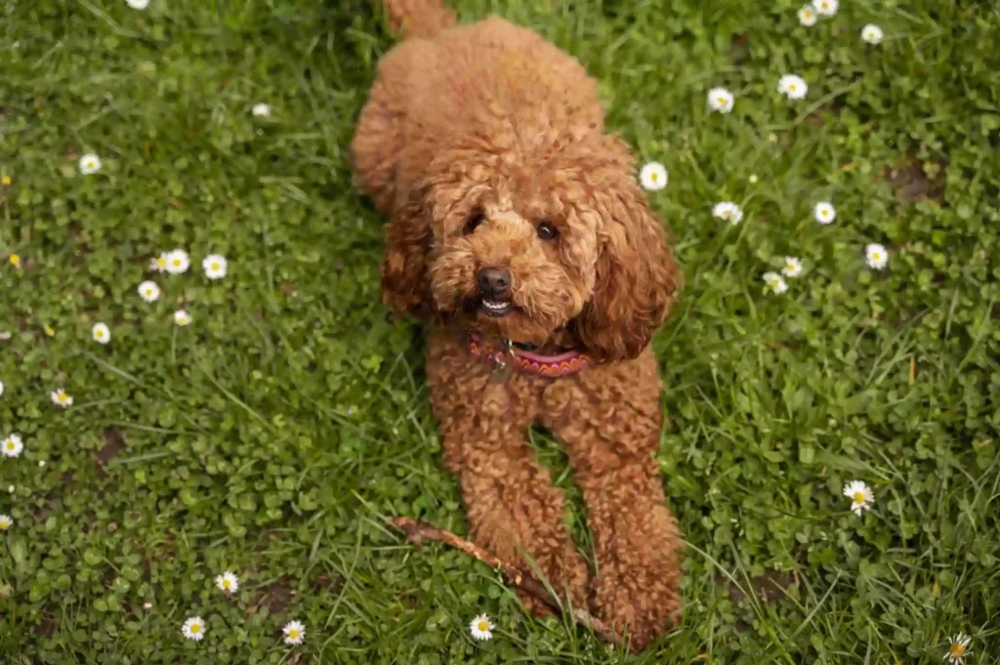

Este pequeño se llama Eddy, y es un perrito lleno de vida, alegría y ganas de jugar. Tiene una energía contagiosa y una mirada traviesa que te hace sonreír sin darte cuenta. Le encanta correr por el césped, oler todas las flores que se encuentra en su camino y perseguir mariposas como si fueran tesoros voladores. Y si hay algo que disfruta más que todo eso… ¡es que le rasquen la pancita! Eddy es de esos perritos que viven el momento, que se emocionan con las cosas más simples y que convierten cualquier paseo en una pequeña aventura. Pero, como muchos pequeños valientes, también tiene una historia detrás. Lleva una cicatriz en una de sus patitas, recuerdo de un mal encuentro con un perro más grande. Aunque perdió esa pelea, jamás perdió su espíritu alegre ni su confianza en las personas. Es cierto que ahora desconfía un poco de los perros más grandes, y necesita tiempo y espacio para sentirse seguro a su lado. Pero con paciencia, cariño y un entorno tranquilo, Eddy demuestra lo mejor de sí: un corazón enorme, una fidelidad infinita y un amor sincero que solo busca un lugar donde echar raíces. Eddy necesita un hogar donde pueda sentirse protegido, correr libre por el jardín, dormir sin miedo y recibir todos los mimos que merece. Su cicatriz solo cuenta una parte de su historia, pero lo que define a Eddy es su capacidad de seguir adelante con alegría y amor. Adoptar a Eddy es darle una nueva oportunidad a un perrito valiente que, pese a todo, nunca dejó de sonreír. ¿Le das tú ese final feliz?
